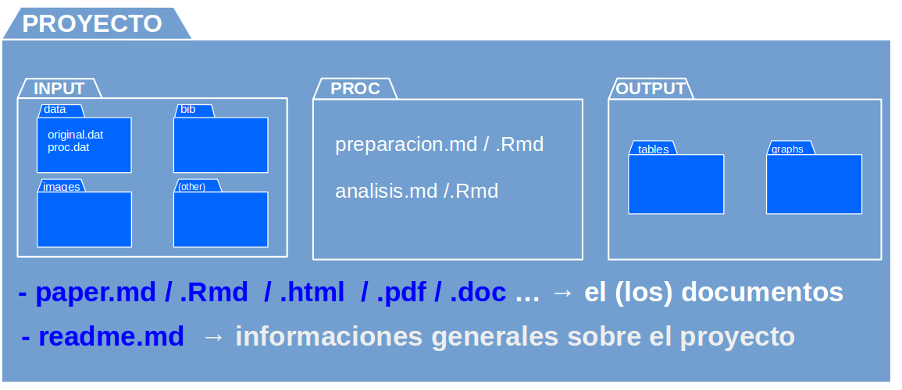
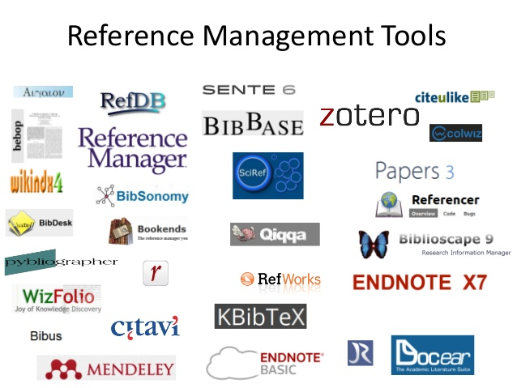
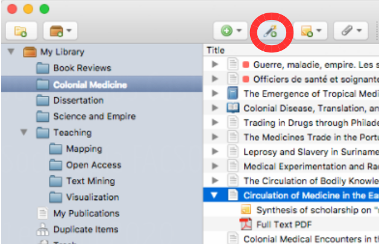
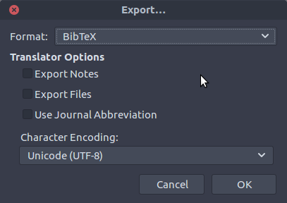
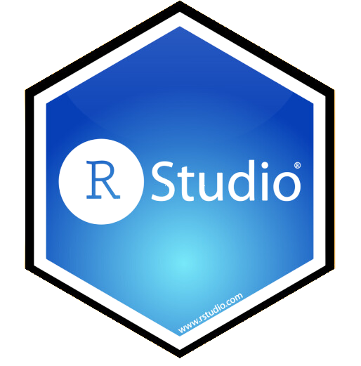

R para el análisis de datos
Sesión 3: Citando en texto plano
Kevin Carrasco
Sociología - UAH
1er Sem 2026
R-data-analisis.netlify.com
Investigación reproducible
Reproducibilidad
Es la posibilidad de regenerar de manera independiente los resultados usando los materiales originales de una investigación ya publicada.
En términos simples: obtener los mismos resultados de una investigación utilizando los mismos datos.
Flujos de investigación reproducible
- Texto plano
- Carpetas y archivos
- Autocontenido
- Abierto
Ejemplo con procesador de texto tradicional

Ejemplo con procesador de texto tradicional

Propuesta: escritura libre y abierta
Introducción a R y RStudio


¿Por qué usar R?
Gratis: No es necesario pagar licencias
Multiplataforma (Windows, Mac-OS, Linux): Los códigos de análisis pueden ser usados en distintas plataformas
Investigación reproducible: Permite documentar los resultados obtenidos paso a paso, mostrando el flujo completo de procesamiento de los datos por medio de scripts
Integración con otros softwares
Documentos en Quarto
¿Qué es markdown?
Forma de escritura simple con pocas marcas de formato
Conversión a distintos formatos de salida (html, pdf)
Soporta encabezados, tablas, imágenes, tablas de contenidos, ecuaciones, links…
Filosofía: foco en contenido primero, el formato después.
¿Qué es Quarto?
Quarto es un sistema moderno de creación de documentos dinámicos, informes, presentaciones, libros, sitios web y más, a partir de archivos de texto plano y por medio del conversor universal de documentos Pandoc.
Evolución de los sistemas de autoría como Jupyter, R Markdown, todo dentro del mismo documento.
Características principales
Lenguaje que combina código (R) y texto (Markdown): Al igual que RMarkdown (.Rmd), Quarto permite combinar texto plano markdown y código de análisis R.
Provee una serie de herramientas para generar documentos dinámicos y publicarlos
Extensiones
- Integración con R
- Referencias bibliográficas
- Renderizado a pdf, word
- Sitios web
- Presentaciones
Recursos
- Recursos para seguir aprendiendo:
- https://quarto.org
- Creación de documentos científicos con Quarto
- Tutorial Quarto for academics
Protocolo de flujo de investigación reproducible
Alternativas
A. ad-hoc
cada investigador define numero de archivos, nombres, carpetas y organización
explicar al resto cómo se organiza
documentar en un archivo cómo se organiza
–> reproducibilidad y transparencia LIMITADA
B. Protocolo reproducible
estructura de carpetas y archivos interconectados que refieren a reglas conocidas (estándares)
autocontenido: toda la información necesaria para la reproducibilidad se encuentra en la carpeta raíz o directorio de trabajo.
Propuesta: Protocolo IPO

Estructura IPO

Mayores detalles y plantilla de carpetas:
Carpeta autocontenida
proyecto autocontenido: reproducible sin necesidad de archivos externos
requisito: establecer directorio de trabajo
posición de referencia de todas las operaciones al interior del proyecto
también llamado directorio raíz
Directorio de trabajo
ej. forma tradicional en hoja de código R:
setwd(ruta-a-carpeta-de-proyecto)problemas: hace referencia a ruta local en el computador donde se está trabajando, por lo tanto no es reproducible y se debe evitar
alternativa sugerida en R: RStudio Projects
RStudio Projects
La funcionalidad Projects de RStudio permite establecer claramente un directorio de trabajo de manera eficiente
Para ello, genera un archivo de extensión .Rproj en el directorio raiz de la carpeta del proyecto
Luego se facilita acceder a la carpeta del proyecto en RStudio ejecutando desde el administrador de archivos del computador (file manager) el archivo .Rproj
para comprobar, ejecutar
getwd()y debería dar la ruta hacia la carpeta del proyecto
Repositorios y apertura
Git
es una especie de memoria o registro local que guarda información sobre:
- quién hizo un cambio
- cuándo lo hizo
- qué hizo
mantiene la información de todos los cambios en la historia de la carpeta / repositorio local
se puede sincronizar con un repositorio remoto (ej. Github)
Git/github
actualmente, Git / Github posee más de 100 millones de repositorios
mayor fuente de código en el mundo
ha transitado desde el mundo de desarrollo de software hacia distintos ámbitos de trabajo colaborativo y abierto
entorno de trabajo que favorece la ciencia abierta
Git no es un registro de versiones de archivos específicos, sino de una carpeta completa
Guarda “fotos” de momentos específicos de la carpeta, y esta foto se saca mediante un commit

Commits
El commit es el procedimiento fundamental del control de versiones
Git no registra cualquier cambio que se “guarda”, sino los que se “comprometen” (commit).
En un commit
- se seleccionan los archivos cuyo cambio se desea registrar (stage)
- se registra lo que se está comprometiendo en el cambio (mensaje de commit)
¿Cuándo hacer un commit?
según conveniencia
sugerencias:
que sea un momento que requiera registro (momento de foto)
no para cambios menores
no esperar muchos cambios distintos que puedan hacer perder el sentido del commit
Citas reproducibles
¿Cómo trabajar con citas cuando se escribe en texto plano?
3 cosas a considerar:
Almacenamiento de referencias: Bibtex
Generación de archivo de referencias: Zotero / BetterBibTex
Citando en texto plano (markdown, Rmarkdown, Quarto y csl)
1. Almacenamiento de referencias

formato de almacenamiento de citas en texto plano (no es un programa)
Un archivo Bibtex tiene extensión .bib, donde deben estar almacenadas todas las referencias citadas en el texto
Ejemplo referencia en Bibtex

Archivo Bibtex (.bib)
un archivo bibtex tiene múltiples referencias una después de la otra, el orden no es relevante.
lo central en cada referencia es la llave de referencia o citation key, que está al principio e identifica cada referencia
cada referencia posee una serie de campos con información necesaria para poder citar
este formato se puede ingresar manualmente, copiar y pegar de otras fuentes, o automatizar desde software de gestión de referencias (detalles más adelante)
2. Generación de archivo de referencias
Utilizando Bibtex en escritura en texto simple
es claro que tanto la generación manual de registros Bibtex como la incorporación manual de citas es un gran desincentivo a su uso.
la simplificación y automatización de esto pasa por dos procesos:
Automatizar la generación de un archivo .bib desde un software de gestión de referencias (Zotero - BetterBibTex)
Automatizar la incorporación de citas al documento

Software de gestión de referencias
los software de gestión de referencias bibliográficas permiten almacenar, organizar y luego utilizar las referencias
diferentes alternativas de software de gestión de referencias bibliográficas: Endnote, Mendeley, Refworks, Zotero
en adelante vamos a ejemplificar con Zotero, que es un software libre y de código abierto
Vamos a usar Zotero para guardar y organizar nuestras referencias bibliográficas, y como bot para generar un archivo .bib
Zotero

instalar https://www.zotero.org
además del programa, es recomendable que es sus computadores personales puedan instalar “conector” para el navegador ( extensión que permite almacenar directamente con 1 click)
Zotero: vista general

Almacenamiento 1: vía conector navegador
Cuando hay una referencia presente en la página, ir al botón del conector y se guarda (Zotero debe estar abierto)
(la referencia se almacena en la carpeta que está activa en Zotero, se puede cambiar al momento de guardar)
Almacenamiento 2: vía identificador DOI / ISBN / ISSN ]

]Almacenamiento 3: manual
Llenando los campos uno por uno:

Al almacenar fijarse que los campos necesarios están completos y que los nombres de los mismos autores coinciden entre citas
Zotero
- más información sobre manejo y capacidades:
https://www.youtube.com/watch?v=Uxv3aE4XoNY
… y tutoriales y guías varios en la red
Zotero-Bibtex
Zotero permite exportar las referencias en formato Bibtex
Puede ser toda la colección o una parte (carpeta)
2 alternativas:
- manual
- automatizada
Zotero-Bibtex: exportación manual

Carpeta -> boton derecho -> export -> formato Bibtex
guardar archivo .bib en carpeta del proyecto
Zotero- Bibtex: Exportando referencias
puede ser colección completa o carpetas específicas
posicionarse sobre carpeta, botón derecho y
Export collection- Formato: BibTex - dar ruta hacia carpeta del proyectoprecaución: no caracteres especiales ni espacios en el nombre del archivo .bib
3. Citando en texto plano
Para citar en texto plano:
- Agregar el archivo .bib al preámbulo del documento (YAML)
- Agregar archivo de formato de bibliografía (csl)
- Insertar citas
bib y csl en YAML
```
---
title: "My document"
bibliography: input/bib/merit-factorial.bib
csl: "input/bib/apa6.csl"
---
Y aquí comienza el documento ...
```Sobre .csl
además de las referencias en .bib, necesitamos poder dar el estilo de formato deseado a citas y bibliografía, mediante archivos csl (citation style language)
existen múltiples estilos de citación (alrededor de 10.000)
los más usados: APA, ASA, Chicago
estos estilos (en archivos csl) se pueden bajar desde repositorios, se recomienda el siguiente: https://www.zotero.org/styles
Citando
La forma de citar es a través de la .red[clave que identifica la referencia], que es la que aparece al principio de cada una, y se agrega una @. Ej:
- Tal como señala @sabbagh_dimension_2003, los principales resultados ...Al renderizar, esto genera:
- Tal como señala Sabbagh (2003), los principales resultados …
Y además, agrega la bibliografía al final del documento.
Opciones de citación
| Se escribe | Renderiza |
|---|---|
Como dice @sabbagh_dimension_2003 |
Como dice Sabbagh (2003) |
Evidencia señala [@sabbagh_dimension_2003] |
Evidencia señala (Sabbagh, 2020) |
Sabbagh [@sabbagh_dimension_2003, pp.35] dice ... |
Sabbagh (2020, p.35) dice … |
- Más de una cita: separadas por ;
Citando en documentos Markdown/Quarto en R
Diferentes formas, pero lo más fácil:
- visual mode
- presionar @ y se despliegan las referencias del .bib
- insert -> citations
Tutorial de Zotero
https://r-data-analisis.netlify.app/practicos/02-content-zotero
R para el análisis de datos
Kevin Carrasco
Sociología - UAH
1er Sem 2026
R-data-analisis.netlify.com
